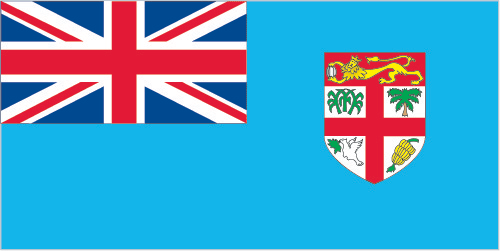
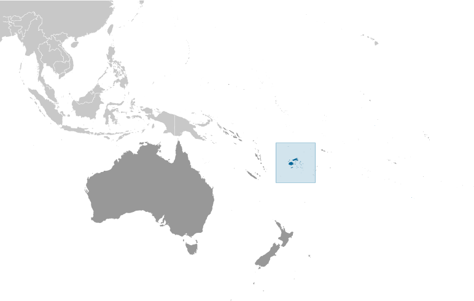
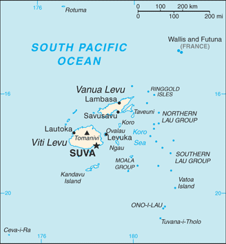

Australia-Oceania :: FIJI
Introduction :: FIJI
-
Fiji became independent in 1970 after nearly a century as a British colony. Democratic rule was interrupted by two military coups in 1987 caused by concern over a government perceived as dominated by the Indian community (descendants of contract laborers brought to the islands by the British in the 19th century). The coups and a 1990 constitution that cemented native Melanesian control of Fiji led to heavy Indian emigration; the population loss resulted in economic difficulties, but ensured that Melanesians became the majority. A new constitution enacted in 1997 was more equitable. Free and peaceful elections in 1999 resulted in a government led by an Indo-Fijian, but a civilian-led coup in 2000 ushered in a prolonged period of political turmoil. Parliamentary elections held in 2001 provided Fiji with a democratically elected government led by Prime Minister Laisenia QARASE. Reelected in May 2006, QARASE was ousted in a December 2006 military coup led by Commodore Voreqe BAINIMARAMA, who initially appointed himself acting president but in January 2007 became interim prime minister. Following years of political turmoil, long-delayed legislative elections were held in September 2014 that were deemed "credible" by international observers and that resulted in BAINIMARAMA being reelected.
Geography :: FIJI
-
Oceania, island group in the South Pacific Ocean, about two-thirds of the way from Hawaii to New Zealand18 00 S, 175 00 EOceaniatotal: 18,274 sq kmland: 18,274 sq kmwater: 0 sq kmcountry comparison to the world: 157slightly smaller than New Jersey0 km1,129 kmmeasured from claimed archipelagic straight baselinesterritorial sea: 12 nmcontiguous zone: 24 nmexclusive economic zone: 200 nmcontinental shelf: 200-m depth or to the depth of exploitationtropical marine; only slight seasonal temperature variationmostly mountains of volcanic originmean elevation: NAelevation extremes: lowest point: Pacific Ocean 0 mhighest point: Tomanivi 1,324 mtimber, fish, gold, copper, offshore oil potential, hydropoweragricultural land: 23.3%arable land 9%; permanent crops 4.7%; permanent pasture 9.6%forest: 55.7%other: 21% (2011 est.)40 sq km (2012)approximately 70% of the population lives on the island of Viti Levu; roughly half of the population lives in urban areascyclonic storms can occur from November to Januarydeforestation; soil erosionparty to: Biodiversity, Climate Change, Climate Change-Kyoto Protocol, Desertification, Endangered Species, Law of the Sea, Marine Life Conservation, Ozone Layer Protection, Tropical Timber 83, Tropical Timber 94, Wetlandssigned, but not ratified: none of the selected agreementsincludes 332 islands; approximately 110 are inhabited
People and Society :: FIJI
-
920,938 (July 2017 est.)country comparison to the world: 161noun: Fijian(s)adjective: FijianiTaukei 56.8% (predominantly Melanesian with a Polynesian admixture), Indian 37.5%, Rotuman 1.2%, other 4.5% (European, part European, other Pacific Islanders, Chinese)note: a 2010 law replaces 'Fijian' with 'iTuakei' when referring to the original and native settlers of Fiji (2007 est.)English (official), Fijian (official), HindustaniProtestant 45% (Methodist 34.6%, Assembly of God 5.7%, Seventh Day Adventist 3.9%, and Anglican 0.8%), Hindu 27.9%, other Christian 10.4%, Roman Catholic 9.1%, Muslim 6.3%, Sikh 0.3%, other 0.3%, none 0.8% (2007 est.)0-14 years: 27.7% (male 130,394/female 124,734)15-24 years: 16.13% (male 75,803/female 72,774)25-54 years: 41.08% (male 193,700/female 184,629)55-64 years: 8.53% (male 39,853/female 38,748)65 years and over: 6.55% (male 27,714/female 32,589) (2017 est.)total dependency ratio: 52.8youth dependency ratio: 43.9elderly dependency ratio: 8.9potential support ratio: 11.2 (2015 est.)total: 28.9 yearsmale: 28.7 yearsfemale: 29.1 years (2017 est.)country comparison to the world: 1270.6% (2017 est.)country comparison to the world: 14918.6 births/1,000 population (2017 est.)country comparison to the world: 916.1 deaths/1,000 population (2017 est.)country comparison to the world: 159-6.5 migrant(s)/1,000 population (2017 est.)country comparison to the world: 202approximately 70% of the population lives on the island of Viti Levu; roughly half of the population lives in urban areasurban population: 54.5% of total population (2017)rate of urbanization: 1.18% annual rate of change (2015-20 est.)SUVA (capital) 176,000 (2014)at birth: 1.05 male(s)/female0-14 years: 1.05 male(s)/female15-24 years: 1.04 male(s)/female25-54 years: 1.05 male(s)/female55-64 years: 1.03 male(s)/female65 years and over: 0.85 male(s)/femaletotal population: 1.03 male(s)/female (2016 est.)30 deaths/100,000 live births (2015 est.)country comparison to the world: 113total: 9.5 deaths/1,000 live birthsmale: 10.5 deaths/1,000 live birthsfemale: 8.5 deaths/1,000 live births (2017 est.)country comparison to the world: 143total population: 73 yearsmale: 70.3 yearsfemale: 75.8 years (2017 est.)country comparison to the world: 1402.41 children born/woman (2017 est.)country comparison to the world: 834.5% of GDP (2014)country comparison to the world: 1560.44 physicians/1,000 population (2009)2 beds/1,000 population (2009)improved:urban: 99.5% of populationrural: 91.2% of populationtotal: 95.7% of populationunimproved:urban: 0.5% of populationrural: 8.8% of populationtotal: 4.3% of population (2015 est.)improved:urban: 93.4% of populationrural: 88.4% of populationtotal: 91.1% of populationunimproved:urban: 6.6% of populationrural: 11.6% of populationtotal: 8.9% of population (2015 est.)0.1% (2016 est.)country comparison to the world: 102<1000 (2016 est.)<100 (2016 est.)note: active local transmission of Zika virus by Aedes species mosquitoes has been identified in this country (as of August 2016); it poses an important risk (a large number of cases possible) among US citizens if bitten by an infective mosquito; other less common ways to get Zika are through sex, via blood transfusion, or during pregnancy, in which the pregnant woman passes Zika virus to her fetus (2016)30.2% (2016)country comparison to the world: 243.9% of GDP (2013)country comparison to the world: 102total: 18.7%male: 14.8%female: 25.4% (2007 est.)
Government :: FIJI
-
conventional long form: Republic of Fijiconventional short form: Fijilocal long form: Republic of Fiji/Matanitu ko Vitilocal short form: Fiji/Vitietymology: the Fijians called their home Viti, but the neighboring Tongans called it Fisi, and in the Anglicized spelling of the Tongan pronunciation - promulgated by explorer Captain James COOK - the designation became Fijiparliamentary republicname: Suva (on Viti Levu)geographic coordinates: 18 08 S, 178 25 Etime difference: UTC+12 (17 hours ahead of Washington, DC, during Standard Time)daylight saving time: +1hr, begins first Sunday in November; ends second Sunday in January14 provinces and 1 dependency*; Ba, Bua, Cakaudrove, Kadavu, Lau, Lomaiviti, Macuata, Nadroga and Navosa, Naitasiri, Namosi, Ra, Rewa, Rotuma*, Serua, Tailevu10 October 1970 (from the UK)Fiji (Independence) Day, 10 October (1970)several previous; latest signed into law September 2013 (2016)common law system based on the English modelhas not submitted an ICJ jurisdiction declaration; accepts ICCt jurisdictioncitizenship by birth: nocitizenship by descent only: at least one parent must be a citizen of Fijidual citizenship recognized: yesresidency requirement for naturalization: 5 years18 years of age; universalchief of state: President Jioji Konousi KONROTE (since 12 November 2015)head of government: Prime Minister Voreqe "Frank" BAINIMARAMA (since 22 September 2014)cabinet: Cabinet appointed by the prime minister from among members of Parliament and is responsible to Parliamentelections/appointments: president elected by Parliament for a 3-year term (eligible for a second term); election last held on 12 October 2015 (next to be held in 2018); prime minister appointed by the presidentelection results: Jioji Konousi KONROTE elected president; Parliament vote - Jioji Konousi KONROTE (Fiji First) 31, Ratu Epeli GANILAU (opposition) 14description: unicameral Parliament (50 seats - 51 beginning in 2018; members directly elected in a nationwide, multi-seat constituency by open-list proportional representation vote to serve 4-year terms)elections: last held on 17 September 2014 (next to be held in 2018)election results: percent of vote by party - FijiFirst 59.2%, SODELPA 28.2%, NFP 5.5%, other 7.1%; seats by party - FijiFirst 32, SODELPA 15, NFP 3highest court(s): Supreme Court (consists of the chief justice, all justices of the Court of Appeal, and judges appointed specifically as Supreme Court judges); Court of Appeal (consists of the court president, all puisne judges of the High Court, and judges specifically appointed to the Court of Appeal); High Court (chaired by the chief justice and includes a minimum of 10 puisne judges; High Court organized into civil, criminal, family, employment, and tax divisions)judge selection and term of office: chief justice appointed by the president of Fiji on the advice of the prime minister following consultation with the parliamentary leader of the opposition; judges of the Supreme Court, the president of the Court of Appeal, the justices of the Court of Appeal, and puisne judges of the High Court appointed by the president of Fiji upon the nomination of the Judicial Service Commission after consulting with the cabinet minister and the committee of the House of Representatives responsible for the administration of justice; the chief justice, Supreme Court judges and justices of Appeal generally required to retire at age 70 but may be waived for one or more sessions of the court; puisne judges appointed for not less than 4 years nor more than 7 years with mandatory retirement at age 65subordinate courts: Magistrates' Court (organized into civil, criminal, juvenile, and small claims divisions)FijiFirst [Frank BAINIMARAMA]Fiji Labor Party or FLP [Mahendra CHAUDHRY]Fiji United Freedon Party or FUFP [Jagath KARUNARATNE]National Federation Party or NFP [Biman PRASAD] (primarily Indian)Peoples Democratic Party or PDP [Lynda TABUYA]Social Democratic Liberal Party or SODELPA [Sitiveni RABUKA]Group Against Racial Discrimination or GARD [Dr. Anirudk SINGH] (suports restoration of a democratic government)Viti Landowners AssociationACP, ADB, AOSIS, C, CP, FAO, G-77, IAEA, IBRD, ICAO, ICCt, ICRM, IDA, IFAD, IFC, IFRCS, IHO, ILO, IMF, IMO, Interpol, IOC, IOM, ISO, ITSO, ITU, ITUC (NGOs), MIGA, OPCW, PCA, PIF, Sparteca (suspended), SPC, UN, UNCTAD, UNDOF, UNESCO, UNIDO, UNMISS, UNWTO, UPU, WCO, WFTU (NGOs), WHO, WIPO, WMO, WTOchief of mission: Ambassador Solo MARA (since 28 January 2016)chancery: 2000 M Street NW, Suite 710, Washington, DC 20036telephone: [1] (202) 466-8320FAX: [1] (202) 466-8325chief of mission: Ambassador Judith CEFKIN (since 3 February 2015); note - also accredited to Kiribati, Nauru, Tonga, and Tuvaluembassy: 158 Princes Rd, Tamavuamailing address: P. O. Box 218, Suvatelephone: [679] 331-4466FAX: [679] 330-8685light blue with the flag of the UK in the upper hoist-side quadrant and the Fijian shield centered on the outer half of the flag; the blue symbolizes the Pacific ocean and the Union Jack reflects the links with Great Britain; the shield - taken from Fiji's coat of arms - depicts a yellow lion, holding a coconut pod between its paws, above a white field quartered by the cross of Saint George; the four quarters depict stalks of sugarcane, a palm tree, a banana bunch, and a white dove of peaceFijian canoe; national color: light bluename: "God Bless Fiji"lyrics/music: Michael Francis Alexander PRESCOTT/C. Austin MILES (adapted by Michael Francis Alexander PRESCOTT)note: adopted 1970; known in Fijian as "Meda Dau Doka" (Let Us Show Pride); adapted from the hymn, "Dwelling in Beulah Land," the anthem's English lyrics are generally sung, although they differ in meaning from the official Fijian lyrics
Economy :: FIJI
-
Fiji, endowed with forest, mineral, and fish resources, is one of the most developed and connected of the Pacific island economies. Earnings from the tourism industry, with an estimated 792,300 tourists visiting in 2016, and remittances from Fijian’s working abroad are the country’s largest foreign exchange earners.Fiji's sugar sector remains a significant industry and a major export, but crops and one of the sugar mills suffered damage during Cyclone Winston in 2016. The sector also faces the complete withdrawal of European Union preferential prices in 2017. Fiji’s trade imbalance continues to widen with increased imports and sluggish performance of domestic exports.The return to parliamentary democracy and successful elections in September 2014 improved investor confidence, but increasing bureaucratic regulation, new taxes and lack of consultation with relevant stakeholders brought four consecutive years of decline for Fiji on the World Bank Ease of Doing Business index. Private sector investment in 2016 exceeded 20% of GDP, compared to 13% in 2013.$8.188 billion (2016 est.)$8.054 billion (2015 est.)$7.673 billion (2014 est.)note: data are in 2016 dollarscountry comparison to the world: 161$4.679 billion (2016 est.)0.4% (2016 est.)3.8% (2015 est.)5.6% (2014 est.)country comparison to the world: 136$9,400 (2016 est.)$9,400 (2015 est.)$9,100 (2014 est.)note: data are in 2016 dollarscountry comparison to the world: 1419.7% of GDP (2016 est.)16.9% of GDP (2015 est.)10.3% of GDP (2014 est.)country comparison to the world: 156household consumption: 72.4%government consumption: 16.2%investment in fixed capital: 18.4%investment in inventories: 1.2%exports of goods and services: 44.3%imports of goods and services: -52.5% (2016 est.)agriculture: 10.7%industry: 18%services: 71.3% (2016 est.)sugarcane, coconuts, cassava (manioc, tapioca), rice, sweet potatoes, bananas; cattle, pigs, horses, goats; fishtourism, sugar processing, clothing, copra, gold, silver, lumber, small cottage industries1.4% (2016 est.)country comparison to the world: 132351,300 (2016 est.)country comparison to the world: 162agriculture: 70%industry and services: 30% (2001 est.)5.5% (2016 est.)8.7% (2013 est.)country comparison to the world: 11331% (2009 est.)lowest 10%: 2.6%highest 10%: 34.9% (2009 est.)revenues: $1.384 billionexpenditures: $1.528 billion (2016 est.)29.8% of GDP (2016 est.)country comparison to the world: 81-3.1% of GDP (2016 est.)country comparison to the world: 12149.6% of GDP (2016 est.)48.4% of GDP (2015 est.)country comparison to the world: 100calendar year3.9% (2016 est.)1.4% (2015 est.)country comparison to the world: 1611.75% (31 December 2010)3% (31 December 2009)country comparison to the world: 1185.85% (31 December 2016 est.)5.79% (31 December 2015 est.)country comparison to the world: 124$1.994 billion (31 December 2016 est.)$1.931 billion (31 December 2015 est.)country comparison to the world: 132$3.486 billion (31 December 2016 est.)$3.325 billion (31 December 2015 est.)country comparison to the world: 140$3.295 billion (31 December 2016 est.)$3.068 billion (31 December 2015 est.)country comparison to the world: 134$452.5 million (31 December 2012 est.)$392.2 million (31 December 2011 est.)$418.8 million (31 December 2010 est.)country comparison to the world: 114$-236 million (2016 est.)$-72.4 million (2015 est.)country comparison to the world: 96$709 million (2016 est.)$886.2 million (2015 est.)country comparison to the world: 166sugar, garments, gold, timber, fish, molasses, coconut oil, mineral waterUS 21.8%, Australia 18.1%, NZ 8.5%, China 6.2%, Tonga 5.1%, Vanuatu 5.1%, UK 4.5%, Kiribati 4.1% (2016)$1.844 billion (2016 est.)$1.723 billion (2015 est.)country comparison to the world: 165manufactured goods, machinery and transport equipment, petroleum products, food, chemicalsNZ 17.1%, Australia 17%, Singapore 15.1%, China 15%, Japan 6.7% (2016)$908.6 million (31 December 2016 est.)$918.8 million (31 December 2015 est.)country comparison to the world: 128$696.4 million (31 December 2016 est.)$871.3 million (31 December 2015 est.)country comparison to the world: 170$4.022 billion (31 December 2016 est.)$3.802 billion (31 December 2015 est.)country comparison to the world: 107$115.1 million (31 December 2016 est.)$112.1 million (31 December 2015 est.)country comparison to the world: 103Fijian dollars (FJD) per US dollar -2.0947 (2016 est.)2.0947 (2015 est.)2.0976 (2014 est.)1.8874 (2013 est.)1.79 (2012 est.)
Energy :: FIJI
-
population without electricity: 375,274electrification - total population: 59%electrification - urban areas: 72%electrification - rural areas: 45% (2012)890 million kWh (2015 est.)country comparison to the world: 157827.7 million kWh (2015 est.)country comparison to the world: 1610 kWh (2016 est.)country comparison to the world: 1340 kWh (2016 est.)country comparison to the world: 148333,000 kW (2015 est.)country comparison to the world: 15436% of total installed capacity (2015 est.)country comparison to the world: 1740% of total installed capacity (2015 est.)country comparison to the world: 8939% of total installed capacity (2015 est.)country comparison to the world: 5225.2% of total installed capacity (2015 est.)country comparison to the world: 210 bbl/day (2016 est.)country comparison to the world: 1350 bbl/day (2014 est.)country comparison to the world: 1220 bbl/day (2014 est.)country comparison to the world: 1260 bbl (1 January 2017 es)country comparison to the world: 1340 bbl/day (2014 est.)country comparison to the world: 14216,000 bbl/day (2015 est.)country comparison to the world: 1470 bbl/day (2014 est.)country comparison to the world: 15415,970 bbl/day (2014 est.)country comparison to the world: 1280 cu m (2013 est.)country comparison to the world: 1340 cu m (2013 est.)country comparison to the world: 1800 cu m (2013 est.)country comparison to the world: 1030 cu m (2013 est.)country comparison to the world: 1240 cu m (1 January 2014 es)country comparison to the world: 1381.7 million Mt (2013 est.)country comparison to the world: 155
Communications :: FIJI
-
total subscriptions: 74,182subscriptions per 100 inhabitants: 8 (July 2016 est.)country comparison to the world: 150total: 927,793subscriptions per 100 inhabitants: 101 (July 2016 est.)country comparison to the world: 161general assessment: modern local, interisland, and international (wire/radio integrated) public and special-purpose telephone, telegraph, and teleprinter facilities; regional radio communications center; subject to occasional devastating cyclonesdomestic: telephone or radio telephone links to almost all inhabited islands; most towns and large villages have automatic telephone exchanges and direct dialing; combined fixed-line and mobile-cellular teledensity roughly 110 per 100 personsinternational: country code - 679; access to important cable links between US and Canada, as well as between NZ and Australia; satellite earth stations - 2 Inmarsat (Pacific Ocean) (2016)Fiji TV, a publicly traded company, operates a free-to-air channel, as well as Sky Fiji and Sky Pacific multi-channel pay-TV services; state-owned commercial company, Fiji Broadcasting Corporation, Ltd, operates 6 radio stations - 2 public broadcasters and 4 commercial broadcasters with multiple repeaters; 5 radio stations with repeaters operated by Communications Fiji, Ltd; transmissions of multiple international broadcasters are available (2009).fjtotal: 425,680percent of population: 46.5% (July 2016 est.)country comparison to the world: 139
Transportation :: FIJI
-
number of registered air carriers: 2inventory of registered aircraft operated by air carriers: 12annual passenger traffic on registered air carriers: 1,336,976annual freight traffic on registered air carriers: 83,686,504 mt-km (2015)DQ (2016)28 (2013)country comparison to the world: 121total: 4over 3,047 m: 11,524 to 2,437 m: 1914 to 1,523 m: 2 (2017)total: 24914 to 1,523 m: 5under 914 m: 19 (2013)total: 597 kmnarrow gauge: 597 km 0.600-m gaugenote: belongs to the government-owned Fiji Sugar Corporation; used to haul sugarcane during the harvest season, which runs from May to December (2008)country comparison to the world: 110total: 3,440 kmpaved: 1,686 kmunpaved: 1,754 km (2011)country comparison to the world: 162203 km (122 km are navigable by motorized craft and 200-metric-ton barges) (2012)country comparison to the world: 97total: 11by type: passenger 4, passenger/cargo 4, refrigerated cargo 1, roll on/roll off 2foreign-owned: 2 (Australia 2) (2010)country comparison to the world: 108major seaport(s): Lautoka, Levuka, Suva
Military and Security :: FIJI
-
0.98% of GDP (2016)1.07% of GDP (2015)1.03% of GDP (2014)1.39% of GDP (2013)1.49% of GDP (2012)country comparison to the world: 61Republic of Fiji Military Forces (RFMF): Land Forces, Naval Forces (2011)18 years of age for voluntary military service; mandatory retirement at age 55 (2013)
Transnational Issues :: FIJI
-
none